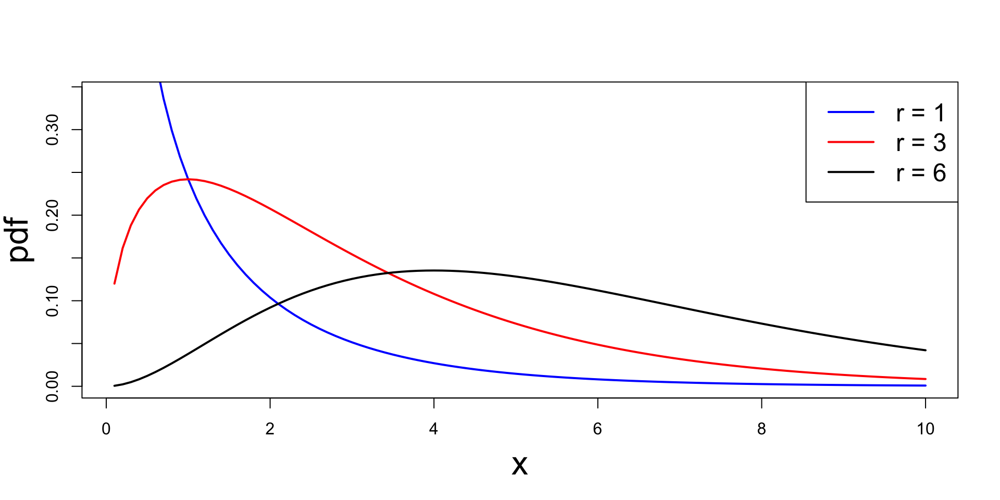
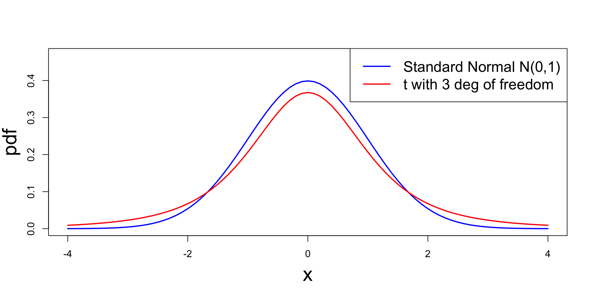

Statistical Models
Lecture 2
Lecture 2:
Random samples &
The t-test
Outline of Lecture 2
- Multivariate random vectors
- Random samples
- Unbiased estimators
- Chi-squared distribution
- Sampling from normal distribution
- t-distribution
- Hypothesis testing
- The one-sample t-test
Part 1:
Multivariate random vectors
Multivariate Random Vectors
Recall
- A Random vector is a function \mathbf{X}\colon \Omega \to \mathbb{R}^n
- \mathbf{X} is a multivariate random vector if n \geq 3
- We denote the components of \mathbf{X} by \mathbf{X}= (X_1,\ldots,X_n) \,, \qquad X_i \colon \Omega \to \mathbb{R}
- We denote the components of a point \mathbf{x}\in \mathbb{R}^n by \mathbf{x}= (x_1,\ldots,x_n)
Discrete and Continuous Multivariate Random Vectors
Everything we defined for bivariate vectors extends to multivariate vectors
Definition
The random vector \mathbf{X}\colon \Omega \to \mathbb{R}^n is:
- continuous if components X_is are continuous
- discrete if components X_i are discrete
Joint pmf
Definition
Note: For all A \subset \mathbb{R}^n it holds P(\mathbf{X}\in A) = \sum_{\mathbf{x}\in A} f_{\mathbf{X}}(\mathbf{x})
Joint pdf
Definition
Note: \int_A denotes an n-fold intergral over all points \mathbf{x}\in A
Expected Value
Definition
Marginal distributions
Marginal pmf or pdf of any subset of the coordinates (X_1,\ldots,X_n) can be computed by integrating or summing the remaining coordinates
To ease notations, we only define maginals wrt the first k coordinates
Definition
Marginal distributions
We use a special notation for marginal pmf or pdf wrt a single coordinate
Definition
Conditional distributions
We now define conditional distributions given the first k coordinates
Definition
Conditional distributions
Similarly, we can define the conditional distribution given the i-th coordinate
Definition
Independence
Definition
Proposition
Independence
Characterization result
Theorem
\mathbf{X}=(X_1,\ldots,X_n) random vector with joint pmf or pdf f_{\mathbf{X}}. They are equivalent:
- The random variables X_1,\ldots,X_n are mutually independent
- There exist functions g_i(x_i) such that f_{\mathbf{X}}(x_1,\ldots,x_n) = \prod_{i=1}^n g_{i}(x_i)
Independence
A very useful theorem
Theorem
Proof: Omitted. See [1] page 184
Example: X_1,\ldots,X_n \, independent \,\, \implies \,\, X_1^2, \ldots, X_n^2 \, independent
Independence
Expectation of product
Theorem
Application: MGF of sums
Theorem
Application: MGF of sums
Proof of Theorem
Follows by the previous Theorem
\begin{align*} M_{Z} (t) & = {\rm I\kern-.3em E}[e^{tZ}] \\ & = {\rm I\kern-.3em E}[\exp( t X_1 + \ldots + tX_n)] \\ & = {\rm I\kern-.3em E}\left[ e^{t X_1} \cdot \ldots \cdot e^{ t X_n} \right] \\ & = \prod_{i=1}^n {\rm I\kern-.3em E}[e^{tX_i}] \\ & = \prod_{i=1}^n M_{X_i}(t) \end{align*}
Example – Sum of independent Normals
Theorem
Example – Sum of independent Normals
Proof of Theorem
We have seen in Lecture 1 that X_i \sim N(\mu_i,\sigma_i^2) \quad \implies \quad M_{X_i}(t) = \exp \left( \mu_i t + \frac{t^2 \sigma_i^2}{2} \right)
As X_1,\ldots,X_n are mutually independent, from the Theorem in Slide 47, we get \begin{align*} M_{Z}(t) & = \prod_{i=1}^n M_{X_i}(t) = \prod_{i=1}^n \exp \left( \mu_i t + \frac{t^2 \sigma_i^2}{2} \right) \\ & = \exp \left( (\mu_1 + \ldots + \mu_n) t + \frac{t^2 (\sigma_1^2 + \ldots +\sigma_n^2)}{2} \right) \\ & = \exp \left( \mu t + \frac{t^2 \sigma^2 }{2} \right) \end{align*}
Example – Sum of independent Normals
Proof of Theorem
Therefore Z has moment generating function M_{Z}(t) = \exp \left( \mu t + \frac{t^2 \sigma^2 }{2} \right)
The above is the mgf of a normal distribution with \text{mean }\quad \mu \quad \text{ and variance} \quad \sigma^2
Since mgfs characterize distributions (see Theorem in Slide 71 of Lecture 1), we conclude Z \sim N(\mu, \sigma^2 )
Example – Sum of independent Gammas
Theorem
Example – Sum of independent Gammas
Proof of Theorem
We have seen in Lecture 1 that X_i \sim \Gamma(\alpha_i,\beta) \qquad \implies \qquad M_{X_i}(t) = \frac{\beta^{\alpha_i}}{(\beta-t)^{\alpha_i}}
As X_1,\ldots,X_n are mutually independent, from the Theorem in Slide 47, we get \begin{align*} M_{Z}(t) & = \prod_{i=1}^n M_{X_i}(t) = \prod_{i=1}^n \frac{\beta^{\alpha_i}}{(\beta-t)^{\alpha_i}} \\ & = \frac{\beta^{(\alpha_1 + \ldots + \alpha_n)}}{(\beta-t)^{(\alpha_1 + \ldots + \alpha_n)}} \\ & = \frac{\beta^{\alpha}}{(\beta-t)^{\alpha}} \end{align*}
Example – Sum of independent Gammas
Proof of Theorem
Therefore Z has moment generating function M_{Z}(t) = \frac{\beta^{\alpha}}{(\beta-t)^{\alpha}}
The above is the mgf of a Gamma distribution with parameters \alpha and \beta
Since mgfs characterize distributions (see Theorem in Slide 71 of Lecture 1), we conclude Z \sim \Gamma(\alpha, \beta )
Expectation of sums
Expectation is linear
Theorem
Variance of sums
Variance is quadratic
Theorem
Part 2:
Random samples
iid random variables
Definition
The random variables X_1,\ldots,X_n are independent identically distributed or iid with pdf or pmf f(x) if
- X_1,\ldots,X_n are mutually independent
- The marginal pdf or pmf of each X_i satisfies f_{X_i}(x) = f(x) \,, \quad \forall \, x \in \mathbb{R}
Random sample
- Suppose the data in an experiment consists of observations on a population
- Suppose the population has distribution f(x)
- Each observation is labelled X_i
- We always assume that the population is infinite
- Therefore each X_i has distribution f(x)
- We also assume the observations are independent
Definition
Random sample
Remark: Let X_1,\ldots,X_n be a random sample of size n from the population f(x). The joint distribution of \mathbf{X}= (X_1,\ldots,X_n) is f_{\mathbf{X}}(x_1,\ldots,x_n) = f(x_1) \cdot \ldots \cdot f(x_n) = \prod_{i=1}^n f(x_i) (since the X_is are mutually independent with distribution f)
Definition
Random sample
Notation:
When the population distribution f(x) depends on a parameter \theta we write f = f(x|\theta)
In this case the joint sample distribution is f_{\mathbf{X}}(x_1,\ldots,x_n | \theta) = \prod_{i=1}^n f(x_i | \theta)
Example
- Suppose a population has \mathop{\mathrm{Exponential}}(\beta) distribution f(x|\beta) = \frac{1}{\beta} e^{-x/\beta} \,, \qquad \text{ if } \,\, x > 0
- Suppose X_1,\ldots,X_n is random sample from the population f(x|\beta)
- The joint sample distribution is then \begin{align*} f_{\mathbf{X}}(x_1,\ldots,x_n | \beta) & = \prod_{i=1}^n f(x_i|\beta) \\ & = \prod_{i=1}^n \frac{1}{\beta} e^{-x_i/\beta} \\ & = \frac{1}{\beta^n} e^{-(x_1 + \ldots + x_n)/\beta} \end{align*}
Example
We have P(X_1 > 2) = \int_{2}^\infty f(x|\beta) \, dx = \int_{2}^\infty \frac{1}{\beta} e^{-x/\beta} \, dx = e^{-2/\beta}
Thanks to iid assumption we can easily compute \begin{align*} P(X_1 > 2 , \ldots, X_n > 2) & = \prod_{i=1}^n P(X_i > 2) \\ & = \prod_{i=1}^n P(X_1 > 2) \\ & = P(X_1 > 2)^n \\ & = e^{-2n/\beta} \end{align*}
Part 3:
Unbiased estimators
Point estimation
Usual situation: Suppose a population has distribution f(x|\theta)
- In general, the parameter \theta is unknown
- Suppose that knowing \theta is sufficient to characterize f(x|\theta)
Example: A population could be normally distributed f(x|\mu,\sigma^2) = \frac{1}{\sqrt{2\pi\sigma}} \, \exp\left( -\frac{(x-\mu)^2}{2\sigma^2}\right) \,, \quad x \in \mathbb{R}
- Here \mu is the mean and \sigma^2 the variance
- Knowing \mu and \sigma^2 completely characterizes the normal distribution
Point estimation
Goal: We want to make predictions about the population
In order to do that, we need to know the population distribution f(x|\theta)
It is therefore desirable to determine \theta, with reasonable certainty
Definitions:
Point estimation is the procedure of estimating \theta from random sample
A point estimator is any function of a random sample W(X_1,\ldots,X_n)
Point estimators are also called statistics
Unbiased estimator
Definition
Suppose W is a point estimator of a parameter \theta
The bias of W is the quantity \rm{Bias}_{\theta} := {\rm I\kern-.3em E}[W] - \theta
W is an unbiased estimator if \rm{Bias}_{\theta} = 0, that is, {\rm I\kern-.3em E}[W] = \theta
Note: A point estimator W = W(X_1, \ldots, X_n) is itself a random variable. Thus {\rm I\kern-.3em E}[W] is the mean of such random variable
Next goal
We want to estimate mean and variance of a population
Unbiased estimators for such quantities are:
- Sample mean
- Sample variance
Estimating the population mean
Problem
Sample mean
Definition
Sample mean
Sample mean is unbiased estimator of mean
Theorem
Sample mean
Proof of theorem
X_1,\ldots,X_n is a random sample from f(x|\theta)
Therefore X_i \sim f(x|\theta) and {\rm I\kern-.3em E}[X_i] = \int_{\mathbb{R}} x f(x|\theta) \, dx = \mu
By linearity of expectation we have {\rm I\kern-.3em E}[\overline{X}] = \frac{1}{n} \sum_{i=1}^n {\rm I\kern-.3em E}[X_i] = \frac{1}{n} \sum_{i=1}^n \mu = \mu
This shows \overline{X} is an unbiased estimator of \mu
Variance of Sample mean
For reasons clear later, it is useful to compute the variance of the sample mean \overline{X}
Lemma
Variance of Sample mean
Proof of Lemma
By assumption,the population has mean \mu and variance \sigma^2
Since X_i is sampled from the population, we have {\rm I\kern-.3em E}[X_i] = \mu \,, \quad {\rm Var}[X_i] = \sigma^2
Since the variance is quadratic, and the X_is are independent, \begin{align*} {\rm Var}[\overline{X}] & = {\rm Var}\left[ \frac{1}{n} \sum_{i=1}^n X_i \right] = \frac{1}{n^2} \sum_{i=1}^n {\rm Var}[X_i] \\ & = \frac{1}{n^2} \cdot n \sigma^2 = \frac{\sigma^2}{n} \end{align*}
Estimating the population variance
Problem
Sample variance
Definition
Sample variance
Equivalent formulation
Proposition
Sample variance
Proof of Proposition
We have \begin{align*} \sum_{i=1}^n \left( X_i - \overline{X} \right)^2 & = \sum_{i=1}^n \left(X_i^2 + \overline{X}^2 - 2 X_i \overline{X} \right) = \sum_{i=1}^n X_i^2 + n\overline{X}^2 - 2 \overline{X} \sum_{i=1}^n X_i \\ & = \sum_{i=1}^n X_i^2 + n\overline{X}^2 - 2 n \overline{X}^2 = \sum_{i=1}^n X_i^2 -n \overline{X}^2 \end{align*}
Dividing by n-1 yields the desired identity S^2 = \frac{ \sum_{i=1}^n X_i^2 -n \overline{X}^2 }{n-1}
Sample variance
Sample variance is unbiased estimator of variance
Theorem
Sample variance
Proof of theorem
By linearity of expectation we infer {\rm I\kern-.3em E}[(n-1)S^2] = {\rm I\kern-.3em E}\left[ \sum_{i=1}^n X_i^2 - n\overline{X}^2 \right] = \sum_{i=1}^n {\rm I\kern-.3em E}[X_i^2] - n {\rm I\kern-.3em E}[\overline{X}^2]
Since X_i \sim f(x|\theta), we have {\rm I\kern-.3em E}[X_i] = \mu \,, \quad {\rm Var}[X_i] = \sigma^2
Therefore by definition of variance, we infer {\rm I\kern-.3em E}[X_i^2] = {\rm Var}[X_i] + {\rm I\kern-.3em E}[X]^2 = \sigma^2 + \mu^2
Sample variance
Proof of theorem
Also recall that {\rm I\kern-.3em E}[\overline{X}] = \mu \,, \quad {\rm Var}[\overline{X}] = \frac{\sigma^2}{n}
By definition of variance, we get {\rm I\kern-.3em E}[\overline{X}^2] = {\rm Var}[\overline{X}] + {\rm I\kern-.3em E}[\overline{X}]^2 = \frac{\sigma^2}{n} + \mu^2
Sample variance
Proof of theorem
Hence \begin{align*} {\rm I\kern-.3em E}[(n-1)S^2] & = \sum_{i=1}^n {\rm I\kern-.3em E}[X_i^2] - n {\rm I\kern-.3em E}[\overline{X}^2] \\ & = \sum_{i=1}^n \left( \mu^2 + \sigma^2 \right) - n \left( \mu^2 + \frac{\sigma^2}{n} \right) \\ & = n\mu^2 + n\sigma^2 - n \mu^2 - \sigma^2 \\ & = (n-1) \sigma^2 \end{align*}
Dividing both sides by (n-1) yields the thesis {\rm I\kern-.3em E}[S^2] = \sigma^2
Additional note
The sample variance is defined by S^2=\frac{\sum_{i=1}^{n} (X_i-\overline{X})^2}{n-1}=\frac{\sum_{i=1}^n X_i^2-n{\overline{X}^2}}{n-1}
Where does the n-1 factor in the denominator come from?
(It would look more natural to divide by n, instead that by n-1)The n-1 factor is caused by a loss of precision:
- Ideally, the sample variance S^2 should contain the population mean \mu
- Since \mu is not available, we estimate it with the sample mean \overline{X}
- This leads to the loss of 1 degree of freedom
Additional note
General statistical rule: \text{Lose 1 degree of freedom for each parameter estimated}
In the case of the sample variance S^2, we have to estimate one parameter (the population mean \mu). Hence \begin{align*} \text{degrees of freedom} & = \text{Sample size}-\text{No. of estimated parameters} \\ & = n-1 \end{align*}
This is where the n-1 factor comes from!
Notation
The realization of a random sample X_1,\ldots,X_n is denoted by x_1, \ldots, x_n
The realization of the sample mean \overline{X} is denoted \overline{x} := \frac{1}{n} \sum_{i=1}^n x_i
The realization of the sample variance S^2 is denoted s^2=\frac{\sum_{i=1}^{n}(x_i-\overline{x})^2}{n-1}=\frac{\sum_{i=1}^n x_i^2-n{\overline{x}^2}}{n-1}
Capital letters denote random variables, while lowercase letters denote specific values (realizations) of those variables
Exercise
Wage data on 10 Mathematicians
| Mathematician | x_1 | x_2 | x_3 | x_4 | x_5 | x_6 | x_7 | x_8 | x_9 | x_{10} |
|---|---|---|---|---|---|---|---|---|---|---|
| Wage | 36 | 40 | 46 | 54 | 57 | 58 | 59 | 60 | 62 | 63 |
Question: Estimate population mean and variance
Solution to the Exercise
Number of advertising professionals n=10
Sample Mean: \overline{x} = \frac{1}{n} \sum_{i=1}^n x_i = \frac{36+40+46+{\dots}+62+63}{10}=\frac{535}{10}=53.5
Sample Variance: \begin{align*} s^2 & = \frac{\sum_{i=1}^n x_{i}^2 - n \overline{x}^2}{n-1} \\ \sum_{i=1}^n x_i^2 & = 36^2+40^2+46^2+{\ldots}+62^2+63^2 = 29435 \\ s^2 & = \frac{29435-10(53.5)^2}{9} = 90.2778 \end{align*}
Part 4:
Chi-squared distribution
Overview
Chi-squared distribution:
- defined in terms of squares of N(0, 1) random variables
- designed to describe variance estimation
- used to define other members of the normal family
- Student t-distribution
- F-distribution
Why the normal family is important
- Classical hypothesis testing and regression problems
- The same maths solves apparently unrelated problems
- Easy to compute
- Statistics tables
- Software
- Enables the development of approximate methods in more complex (and interesting) problems
Reminder: Normal distribution
X has normal distribution with mean \mu and variance \sigma^2 if pdf is f(x) := \frac{1}{\sqrt{2\pi\sigma^2}} \, \exp\left( -\frac{(x-\mu)^2}{2\sigma^2}\right) \,, \quad x \in \mathbb{R}
In this case we write X \sim N(\mu,\sigma^2)
The standard normal distribution is denoted N(0,1)
Chi-squared distribution
Definition
Definition
Chi-squared distribution
Pdf characterization
Theorem
Chi-squared distribution
Plots of chi-squared pdf for different choices of r
Proof of Theorem – Case r =1
- We start with the case r=1
- Need to prove that \chi^2_1 \sim \Gamma(1/2, 1/2)
- Therefore we need to show that the pdf of \chi^2_1 is f_{\chi^2_1}(x)=\frac{x^{-1/2} \, e^{-x/2}}{\Gamma(1/2) 2^{1/2}} \,, \quad x>0
Proof of Theorem – Case r =1
- To this end, notice that by definition \chi^2_1 \sim Z^2 \,, \qquad Z \sim N(0,1)
- Hence, for x>0 we can compute cdf via \begin{align*} F_{\chi^2_1}(x) & = P(\chi^2_1 \leq x) \\ & = P(Z^2 \leq x ) \\ & = P(- \sqrt{x} \leq Z \leq \sqrt{x} ) \\ & = 2 P (0 \leq Z \leq \sqrt{x}) \end{align*} where in the last equality we used symmetry of Z around x=0
Proof of Theorem – Case r =1
- Recalling the definition of standard normal pdf we get \begin{align*} F_{\chi^2_1}(x) & = 2 P (0 \leq Z \leq \sqrt{x}) \\ & = 2 \frac{1}{\sqrt{2\pi}} \int_0^{\sqrt{x}} e^{-t^2/2} \, dt \\ & = 2 \frac{1}{\sqrt{2\pi}} G( \sqrt{x} ) \end{align*} where we set G(x) := \int_0^{x} e^{-t^2/2} \, dt
Proof of Theorem – Case r =1
We can now compute pdf of \chi_1^2 by differentiating the cdf
By the Fundamental Theorem of Calculus we have G'(x) = \frac{d}{dx} \left( \int_0^{x} e^{-t^2/2} \, dt \right) = e^{-x^2/2} \quad \implies \quad G'(\sqrt{x}) = e^{-x/2}
Chain rule yields \begin{align*} f_{\chi^2_1}(x) & = \frac{d}{dx} F_{\chi^2_1}(x) = \frac{d}{dx} \left( 2 \frac{1}{\sqrt{2\pi}} G( \sqrt{x} ) \right) \\ & = 2 \frac{1}{\sqrt{2\pi}} G'( \sqrt{x} ) \frac{x^{-1/2}}{2} = \frac{x^{-1/2} e^{-x/2}}{2^{1/2} \sqrt{\pi}} \end{align*}
Proof of Theorem – Case r =1
- It is well known that \Gamma(1/2) = \sqrt{\pi}
- Hence, we conclude f_{\chi^2_1}(x) = \frac{x^{-1/2} e^{-x/2}}{2^{1/2} \sqrt{\pi}} = \frac{x^{-1/2} e^{-x/2}}{2^{1/2} \Gamma(1/2)}
- This shows \chi_1^2 \sim \Gamma(1/2,1/2)
Proof of Theorem – Case r \geq 2
We need to prove that \chi^2_r \sim \Gamma(r/2, 1/2)
By definition \chi^2_r \sim Z^2_1 + \ldots + Z^2_r \,, \qquad Z_i \sim N(0,1) \quad \text{iid}
By the Theorem in Slide 46, we have Z_1,\ldots,Z_r \,\,\, \text{iid} \quad \implies \quad Z_1^2,\ldots,Z_r^2 \,\,\, \text{iid}
Moreover, by definition, Z_i^2 \sim \chi_1^2
Therefore, we have \chi^2_r = \sum_{i=1}^r X_i, \qquad X_i \sim \chi^2_1 \quad \text{iid}
Proof of Theorem – Case r \geq 2
We have just proven that \chi_1^2 \sim \Gamma (1/2,1/2)
Moreover, the Theorem in Slide 53 guarantees that Y_i \sim \Gamma(\alpha_i, \beta) \quad \text{independent} \quad \implies \quad Y_1 + \ldots + Y_n \sim \Gamma(\alpha,\beta) where \alpha = \alpha_1 + \ldots + \alpha_n
Therefore, we conclude that \chi^2_r = \sum_{i=1}^r X_i, \qquad X_i \sim \Gamma(1/2,1/2) \quad \text{iid} \quad \implies \quad \chi^2_r \sim \Gamma(r/2,1/2)
Part 5:
Sampling from normal distribution
Sampling from Normal distribution
Sample mean and variance: For a random sample X_1,\ldots,X_n defined by S^2 := \frac{1}{n-1} \sum_{i=1}^n \left( X_i - \overline{X} \right)^2 \,, \qquad \overline{X} := \frac{1}{n} \sum_{i=1}^n X_i
Question
Properties of Sample Mean and Variance
Theorem
Let X_1,\ldots,X_n be a random sample from N(\mu,\sigma^2). Then
- \overline{X} and S^2 are independent random variables
- \overline{X} and S^2 are distributed as follows \overline{X} \sim N(\mu,\sigma^2/n) \,, \qquad \frac{(n-1)S^2}{\sigma^2} \sim \chi_{n-1}^2
Properties of Sample Mean and Variance
Proof of Theorem
- To prove independence of \overline{X} and S^2 we make use of the following Lemma
- Proof of this Lemma is technical and omitted
- For a proof see Lemma 5.3.3 in [1]
Lemma
Properties of Sample Mean and Variance
Proof of Theorem
Note that X_i - \overline{X} and \overline{X} are normally distributed, being sums of iid normals
Therefore, we can apply the Lemma to X_i - \overline X and \overline{X}
To this end, recall that {\rm Var}[\overline X] = \sigma^2/n
Also note that, by independence of X_1,\ldots,X_n {\rm Cov}(X_i,X_j) = \begin{cases} {\rm Var}[X_i] & \text{ if } \, i = j \\ 0 & \text{ if } \, i \neq j \\ \end{cases}
Properties of Sample Mean and Variance
Proof of Theorem
Using bilinearity of covariance (i.e. linearity in both arguments) \begin{align*} {\rm Cov}(X_i - \overline X, \overline X) & = {\rm Cov}(X_i,\overline{X}) - {\rm Cov}(\overline X,\overline{X}) \\ & = \frac{1}{n} \sum_{j=1}^n {\rm Cov}(X_i,X_j) - {\rm Var}[\overline X] \\ & = \frac{1}{n} {\rm Var}[X_i] - {\rm Var}[\overline X] \\ & = \frac{1}{n} \sigma^2 - \frac{\sigma^2}{n} = 0 \end{align*}
By the Lemma, we infer independence of X_i - \overline X and \overline X
Properties of Sample Mean and Variance
Proof of Theorem
We have shown X_i - \overline X \quad \text{and} \quad \overline X \quad \text{independent}
By the Theorem in Slide 46, we hence have (X_i - \overline X)^2 \quad \text{and} \quad \overline X \quad \text{independent}
By the same Theorem we also get \sum_{i=1}^n (X_i - \overline X)^2 = (n-1)S^2 \quad \text{and} \quad \overline X \quad \text{independent}
Again the same Theorem, finally implies independence of S^2 and \overline X
Properties of Sample Mean and Variance
Proof of Theorem
We now want to show that \overline{X} \sim N(\mu,\sigma^2/n)
We are assuming that X_1,\ldots,X_n are iid with {\rm I\kern-.3em E}[X_i] = \mu \,, \qquad {\rm Var}[X_i] = \sigma^2
We have already seen in Slides 70 and 72 that, in this case, {\rm I\kern-.3em E}[\overline X] = \mu \,, \quad {\rm Var}[\overline{X}] = \frac{\sigma^2}{n}
Sum of independent normals is normal (see the Theorem in slide 50)
Therefore \overline{X} is normal, with mean \mu and variance \sigma^2/n
Properties of Sample Mean and Variance
Proof of Theorem
- We are left to prove that
\frac{(n-1)S^2}{\sigma^2} \sim \chi_{n-1}^2
- This is somewhat technical and we don’t actually prove it
- For a proof see Theorem 5.3.1 in [1]
- We however want to provide some intuition on why it holds
- Recall that the chi-squared distribution with r degrees of freedom is \chi_r^2 \sim Z_1^2 + \ldots + Z_r^2 with Z_i iid and N(0,1)
Properties of Sample Mean and Variance
Proof of Theorem
By definition of S^2 we have \frac{(n-1)S^2}{\sigma^2} = \sum_{i=1}^n \frac{(X_i - \overline X)^2}{\sigma^2}
If we replace the sample mean \overline X with the actual mean \mu we get the approximation \frac{(n-1)S^2}{\sigma^2} = \sum_{i=1}^n \frac{(X_i - \overline X)^2}{\sigma^2} \approx \sum_{i=1}^n \frac{(X_i - \mu)^2}{\sigma^2}
Properties of Sample Mean and Variance
Proof of Theorem
Since X_i \sim N(\mu,\sigma^2), we have that Z_i := \frac{X_i - \mu}{\sigma} \sim N(0,1)
Therefore \frac{(n-1)S^2}{\sigma^2} \approx \sum_{i=1}^n \frac{(X_i - \mu)^2}{\sigma^2} = \sum_{i=1}^n Z_i^2 \sim \chi_n^2
The above is just an approximation:
When replacing \mu with \overline X, we lose 1 degree of freedom \frac{(n-1)S^2}{\sigma^2} \sim \chi_{n-1}^2
Part 6:
t-distribution
Estimating the Mean
Problem
What to do?
We can collect normal samples X_1, \ldots, X_n with X_i \sim N(\mu,\sigma^2)
We then compute the sample mean \overline X := \frac{1}{n} \sum_{i=1}^n X_i
We know that {\rm I\kern-.3em E}[\overline X] = \mu
\overline X approximates \mu
Question
Answer: We consider the Test Statistic T := \frac{\overline{X}-\mu}{\sigma/\sqrt{n}} \, \sim \,N(0,1)
This is because \overline X \sim N(\mu,\sigma^2/n) – see Slide 101
If \sigma is known, then the only unknown in T is \mu
T can be used to estimate \mu \quad \implies \quad Hypothesis Testing
Hypothesis testing
Suppose that \mu=\mu_0 (this is called the null hypothesis)
Using the data collected \mathbf{x}= (x_1,\ldots,x_n), we compute t := \frac{\overline{x}-\mu_0}{\sigma/\sqrt{n}} \,, \qquad \overline{x} = \frac{1}{n} \sum_{i=1}^n x_i
When \mu = \mu_0, the number t is a realization of the test statistic (random variable) T = \frac{\overline{X}-\mu_0}{\sigma/\sqrt{n}} \, \sim \,N(0,1)
Therefore, we can compute the probability of T being close to t p := P(T \approx t)
Hypothesis testing
Given the value p := P(T \approx t) we have 2 cases:
- p is small \quad \implies \quad reject the null hypothesis \mu = \mu_0
- p small means it is unlikely to observe such value of t
- Recall that t depends only on the data \mathbf{x}, and on our guess \mu_0
- We conclude that our guess must be wrong \quad \implies \quad \mu \neq \mu_0
- p is large \quad \implies \quad do not reject the null hypothesis \mu = \mu_0
- p large means that t occurs with reasonably high probability
- There is no reason to believe our guess \mu_0 was wrong
- But we also do not have sufficient reason to believe \mu_0 was correct
Important Remark
The key step in Hypothesis Testing is computing p = P(T \approx t)
This is only possible if we know the distribution of T = \frac{\overline{X}-\mu}{\sigma/\sqrt{n}}
If we assume that the variance \sigma^2 is known, then T \sim N(0,1) and p is easily computed
Unknown variance
Problem
Idea: We can replace \sigma^2 with the sample variance S^2 = \frac{\sum_{i=1}^n X_i^2 - n \overline{X}^2}{n-1} The new test statistic is hence T := \frac{\overline{X}-\mu}{S/\sqrt{n}}
Distribution of the test statistic
Question
T := \frac{\overline{X}-\mu}{S/\sqrt{n}} \qquad ?
Answer: T has t-distribution with n-1 degrees of freedom
- This is also known as Student’s t-distribution
- Student was the pen name under which W.S. Gosset was publishing his research
- He was head brewer at Guinness, at the time the largest brewery in the world!
- Used t-distribution to study chemical properties of barley from low samples [2] (see original paper )
t-distribution
Definition
Characterization of the t-distribution
Theorem
Proof: Given as exercise in Homework assignments
Distribution of t-statistic
As a consequence of the Theorem in previous slide we obtain:
Theorem
Distribution of t-statistic
Proof of Theorem
Since X_1,\ldots,X_n is random sample from N(\mu,\sigma^2), we have that (see Slide 101) \overline{X} \sim N(\mu, \sigma^2/n)
Therefore, we can renormalize and obtain U := \frac{ \overline{X} - \mu }{ \sigma/\sqrt{n} } \sim N(0,1)
Distribution of t-statistic
Proof of Theorem
We have also shown that V := \frac{ (n-1) S^2 }{ \sigma^2 } \sim \chi_{n-1}^2
Finally, we can rewrite T as T = \frac{\overline{X}-\mu}{S/\sqrt{n}} = \frac{U}{ \sqrt{V/(n-1)} }
By the Theorem in Slide 118, we conclude that T \sim t_{n-1}
Properties of t-distribution
Proposition: Expectation and Variance of t-distribution
Suppose that T \sim t_p. We have:
- If p>1 then {\rm I\kern-.3em E}[T] = 0
- If p>2 then {\rm Var}[T] = \frac{p}{p-2}
Notes:
- We have to assume p>1, otherwise {\rm I\kern-.3em E}[T] = \infty for p=1
- We have to assume p>2, otherwise {\rm Var}[T] = \infty for p=1,2
- {\rm I\kern-.3em E}[T] = 0 follows trivially from symmetry of the pdf f_T(t) around t=0
- Computing {\rm Var}[T] is quite involved, and we skip it
t-distribution
Comparison with Standard Normal
The t_p distribution approximates the standard normal N(0,1):
- t_p it is symmetric around zero and bell-shaped, like N(0,1)
- t_p has heavier tails compared to N(0,1)
- While the variance of N(0,1) is 1, the variance of t_p is \frac{p}{p-2}
- We have that t_p \to N(0,1) \quad \text{as} \quad p \to \infty
Plot: Comparison with Standard Normal
Part 7:
Hypothesis testing
Definition of Hypothesis
- Idea:
- Interested in knowing a population parameter \theta
- \theta cannot be measured directly
- We can sample the population and draw conclusions on \theta
- Such conclusions are called hypotheses
Definition
Complementary hypotheses
Two hypotheses are complementary if exactly one of them can be true
Complementary hypotheses are called:
- H_0 the null hypothesis
- H_1 the alternative hypothesis
Goal: Find a way to decide which between H_0 and H_1 is true
How to model hypotheses
We denote by:
- \theta a population parameter
- \Theta the space of all population parameters
For \Theta_0 \subset \Theta we define the associated null and alternative hypotheses as \begin{align*} H_0 \colon & \theta \in \Theta_0 & \qquad \text{ null hypothesis} \\ H_1 \colon & \theta \in \Theta_0^c & \qquad \text{ alternative hypothesis} \end{align*}
Definition of Hypothesis test
Definition
A hypothesis test is a rule to decide:
- For which sample values we decide to accept H_0 as true
- For which sample values we reject H_0 and accept H_1 as true
Acceptance and Critical regions
The sample space is partitioned into two regions:
- Acceptance region: For samples \mathbf{x} in this region we accept H_0
- Critical region: For samples \mathbf{x} in this region we reject H_0
In most cases: Critical region is defined in terms of a test statistic W(\mathbf{x})
Example: We could decide to reject H_0 if W(\mathbf{x}) \in R with R \subset \mathbb{R} some rejection region
One-sided vs Two-sided Tests
Let \theta be one dimensional parameter. A hypothesis test is:
One-sided: if the null and alternative hypotheses are of the form H_0 \colon \theta \leq \theta_0 \,, \qquad H_1 \colon \theta > \theta_0 or also H_0 \colon \theta \geq \theta_0 \,, \qquad H_1 \colon \theta < \theta_0
Two-sided: if the null and alternative hypotheses are of the form H_0 \colon \theta = \theta_0 \,, \qquad H_1 \colon \theta \neq \theta_0
Example 1: Two-sided test
We want to assess whether a coin is fair
To test fairness, toss the coin many times and record outcome
\theta = proportion of Heads
The decision is between:
- Null hypothesis: The coin is fair \,\, \implies \,\, \theta = \frac12
- Alternative hypothesis: The coin is not fair \,\, \implies \,\, \theta \neq \frac12
Hypothesis test: \qquad \quad H_0 \colon \theta = \frac12 \,, \qquad H_1 \colon \theta \neq \frac12
Example 2: One-sided test
A University wants to advertise its MBA Program: \text{ MBA } = \text{ higher salary }
Is this a true or false statement?
The University has only access to incomplete data (could not ask all former students). Need hypothesis testing
\theta = average change in salary after completing the MBA program
- Null hypothesis: No improvement in salary \,\, \implies \,\, \theta \leq 0
- Alternative hypothesis: Salary increases \,\, \implies \,\, \theta > 0
Hypothesis test: \qquad \quad H_0 \colon \theta \leq 0 \,, \qquad H_1 \colon \theta > 0
Part 8:
The one-sample t-test
One-sample Two-sided t-test
Goal: estimate the mean \mu of a normal population N(\mu,\sigma^2). If \mu_0 is guess for \mu H_0 \colon \mu = \mu_0 \qquad H_1 \colon \mu \neq \mu_0
- One-sample means we sample only from one population
- The variance \sigma is unknown
- Suppose the sample size is n, with sample X_1 ,\ldots,X_n
- We consider the t-statistics T = \frac{\overline{X}-\mu_0}{S/\sqrt{n}}
- Recall: T \sim t_{n-1} Student’s t-distribution with n-1 degrees of freedom
Procedure for all tests
- Calculation
- Reference statistical tables or numerical values
- Interpretation
One-sample Two-sided t-test
Calculation
- We have n samples available x_1,\ldots,x_n
- Compute sample mean \overline{x} = \frac{1}{n} \sum_{i=1}^n x_i
- Compute the sample standard deviation s = \sqrt{\frac{\sum_{i=1}^n x_i^2 - n \overline{x}^2}{n-1}}
One-sample Two-sided t-test
Calculation
Compute the estimated standard error \mathop{\mathrm{e.s.e.}}= \frac{s}{\sqrt{n}}
Compute the sample t-statistic t = \frac{\text{estimate } - \text{ hypothesised value}}{\mathop{\mathrm{e.s.e.}}} = \frac{\overline x - \mu_0}{s/\sqrt{n}}
\mu_0 is the value of the null hypothesis H_0
One-sample Two-sided t-test
p-value
In alternative to computing the t-statistic, we can compute the p-value
p-value is a measure of likely we are to observe the data if we assume the null hypothesis is true
We have 2 options:
- LOW p-value \quad \implies \quad reject H_0
- HIGH p-value \quad \implies \quad do not reject H_0
In this module we reject H_0 for p-values p<0.05
One-sample Two-sided t-test
p-value
For the two-sided t-test, the p-value is defined as p := 2P(t_{n-1} > |t| \, | \, H_0) where t_{n-1} follows the t-distribution with n-1 degrees of freedom
In other words, the p-value is p = 2P(\text{Observing values more extreme than |t| }| \, \mu=\mu_0)
One-sample Two-sided t-test
p-value
p<0.05 means that the test statistic t is extreme: \,\, P(t_{n-1} > |t|)<0.025
t falls in the grey areas in the t_{n-1} plot below: Each grey area measures 0.025
One-sample Two-sided t-test
p-value
- How to compute p?
- Use statistical tables – Available here
- Use R – Next sections
One-sample Two-sided t-test
Reference statistical tables
Find Table 1 in this file
Look at the row with Degree of Freedom n-1 (or its closest value)
Find critical value t^* := t_{n-1}(0.025) in column \alpha = 0.025
Example: n=10, DF =9, t^*=t_{9}(0.025)=2.262
One-sample Two-sided t-test
Reference statistical tables
The critical value t^* = t_{n-1}(0.025) found in the table satisfies P(t_{n-1}>t^*) = 0.025
By definition of p-value for two-sided t-test we have p := 2P(t_{n-1}>|t|)
Therefore, for |t|>t^* \begin{align*} p & := 2P(t_{n-1}>|t|) \\ & < 2P(t_{n-1}>t^*) = 2 \cdot (0.025) = 0.05 \end{align*}
Conclusion: \quad |t|>t^* \iff p<0.05 \qquad (Extreme t \iff low p-value)
One-sample Two-sided t-test
Interpretation
Recall that p = 2P ( \text{Observing values more extreme than t } | \mu = \mu_0)
We have two possibilities:
- |t|>t^*
- In this case p<0.05
- The observed statistic t is very unlikely under H_0 \,\, \implies \,\, reject H_0
- |t| \leq t^*
- In this case p>0.05
- The observed statistic t is not unlikely under H_0 \,\, \implies \,\, do not reject H_0
Example: 2008 crisis
- Data: Monthly Consumer Confidence Index (CCI) in 2007 and 2009
- Question: Did the crash of 2008 have lasting impact upon CCI?
- Observation: Data shows a massive drop in CCI between 2009 and 2007
- Method: Use t-test to see whether there was a change in CCI
| Month | J | F | M | A | M | J | J | A | S | O | N | D |
|---|---|---|---|---|---|---|---|---|---|---|---|---|
| CCI 2007 | 86 | 86 | 88 | 90 | 99 | 97 | 97 | 96 | 99 | 97 | 90 | 90 |
| CCI 2009 | 24 | 22 | 21 | 21 | 19 | 18 | 17 | 18 | 21 | 23 | 22 | 21 |
| Difference | 62 | 64 | 67 | 69 | 80 | 79 | 80 | 78 | 78 | 74 | 68 | 69 |
Example: 2008 crisis
- This is really a two-sample problem – CCI data in 2 populations: 2007 and 2009
- It reduces to a one-sample problem because we have directly comparable units
- If units cannot be compared, then we must use a two-sample approach
- Two-sample approach will be discussed later
| Month | J | F | M | A | M | J | J | A | S | O | N | D |
|---|---|---|---|---|---|---|---|---|---|---|---|---|
| CCI 2007 | 86 | 86 | 88 | 90 | 99 | 97 | 97 | 96 | 99 | 97 | 90 | 90 |
| CCI 2009 | 24 | 22 | 21 | 21 | 19 | 18 | 17 | 18 | 21 | 23 | 22 | 21 |
| Difference | 62 | 64 | 67 | 69 | 80 | 79 | 80 | 78 | 78 | 74 | 68 | 69 |
Setting up the test
- We want to test if there was a change in CCI from 2007 to 2009
- We are really only interested in the difference in CCI
- Let \mu be the (unknown) average difference in CCI
- The null hypothesis is that there was (on average) no change in CCI H_0 \colon \mu = 0
- The alternative hypothesis is that there was some change: H_1 \colon \mu \neq 0
- Note that this is a two-sided test
Calculation
Using the available data, we need to compute:
Sample mean and standard deviation \overline{x} = \frac{1}{n} \sum_{i=1}^n x_i \qquad s = \sqrt{\frac{\sum_{i=1}^n x_i^2 - n \overline{x}^2}{n-1}}
Test statistic t = \frac{\overline x - \mu_0}{s/\sqrt{n}}
Calculation
| CCI | J | F | M | A | M | J | J | A | S | O | N | D |
|---|---|---|---|---|---|---|---|---|---|---|---|---|
| Difference | 62 | 64 | 67 | 69 | 80 | 79 | 80 | 78 | 78 | 74 | 68 | 69 |
\begin{align*} \overline{x} & =\frac{1}{n} \sum_{i=1}^{n} x_i=\frac{1}{12} \left(62+64+67+{\ldots}+68+69\right)=\frac{868}{12}=72.33 \\ \sum_{i=1}^{n} x_i^2 & = 62^2+64^2+67^2+{\ldots}+68^2+69^2 = 63260 \\ s & = \sqrt{ \frac{\sum_{i=1}^n x_i^2 - n \overline{x}^2}{n-1} } = \sqrt{\frac{63260-12\left(\frac{868}{12}\right)^2}{11}} = \sqrt{\frac{474.666}{11}} = 6.5689 \end{align*}
Calculation
- The sample size is n=12
- The sample mean is \overline{x}=72.33
- The sample standard deviation is s = 6.5689
- The hypothesized mean is \mu_0 = 0
- The t-statistic is t = \frac{\overline{x} - \mu_0}{s/\sqrt{n}} = \frac{72.33 - 0}{6.5689/\sqrt{12}} = 38.145
Reference statistical tables
Find Table 1 in this file
- Find row with DF = n-1 (or closest). Find critical value t^* in column \alpha = 0.025
- In our case: n=12, DF =11, t^*= t_{11}(0.025) =2.201

Reference statistical tables
- Plot of t_{11} distribution. White area is 0.95, total shaded area is 0.05
- Probability of observing |t|>t^* = 2.201 is p<0.025

Interpretation
We have computed:
- Test statistic t = 38.145
- Critical value t^* = 2.201
Therefore |t| = 38.145 > 2.201 = t^*
This implies rejecting the null hypothesis H_0 \colon \mu = 0
Interpretation
t-test implies that mean difference in CCI is \mu \neq 0
The sample mean difference is positive (\bar{x}=72.33)
Conclusions:
- CCI has changed from 2007 to 2009 (backed by t-test)
- CCI seems higher in 2007 than in 2009 (backed by sample mean)
- The 2008 crash seems to have reduced consumer confidence
One-sided t-tests
Suppose given a hypothesized value \mu_0 for the mean \mu of a normal population
In certain situations, if the true mean differs from \mu_0 (\mu \neq \mu_0), you may have reason to believe specifically that \mu < \mu_0 \qquad \text{or} \qquad \mu > \mu_0
In such cases, you would support these conclusions if, respectively, t \ll 0 \qquad \text{or} \qquad t \gg 0 \, , where t is the t-statistic defined as t = \frac{\overline{x} - \mu_0}{\mathop{\mathrm{e.s.e.}}} Reject H_0 if the t-statistic is sufficiently extreme to the left OR right
Summary: The one-sample t-test
Suppose given a sample
- x_1, \ldots, x_n from N(\mu_X,\sigma^2) of size n
The two-sided hypothesis for testing if \mu = \mu_0 is H_0 \colon \mu = \mu_0 \,, \quad \qquad H_1 \colon \mu \neq \mu_0
The one-sided alternative hypotheses are H_1 \colon \mu < \mu_0 \quad \text{ or } \quad H_1 \colon \mu > \mu_0
Procedure: 3 Steps
- Calculation: Compute the t-statistic t = \frac{ \overline{x} - \mu_0}{ s/\sqrt{n} } where \mu_0 is the null hypothesis, and sample mean and standard deviation are \overline{x} = \frac{1}{n} \sum_{i=1}^n x_i \,, \qquad s = \sqrt{\frac{\sum_{i=1}^n x_i^2 - n \overline{x}^2}{n-1} }
- Statistical Tables or R: Find either
- Critical value t^* in Table 1
- p-value in R (later)
- Interpretation: Reject H_0 when either p < 0.05 \qquad \text{ or } \qquad t \in \,\,\text{Rejection Region} \qquad \qquad \qquad \qquad (T \, \sim \, t_{n-1})
| Alternative | Rejection Region | t^* | p-value |
|---|---|---|---|
| \mu \neq \mu_0 | |t| > t^* | t_{n-1}(0.025) | 2P(T > |t|) |
| \mu < \mu_0 | t < - t^* | t_{n-1}(0.05) | P(T < t) |
| \mu > \mu_0 | t > t^* | t_{n-1}(0.05) | P(T > t) |

Reject H_0 if t-statistic t falls in the Rejection Region (the gray areas)
Example: Rising textbook costs
The University Bookstore claims that, on average, a student will pay 500£ per semester for textbooks and supplies
The Student Union does not believe the University Bookstore’s claims: They think the students spend more
They interviewed 10 students, asking each how much they spent on textbooks and supplies. The answers are below.
| Costs | 304 | 431 | 385 | 987 | 303 | 480 | 455 | 724 | 642 | 506 |
To test whether the students spend more than 500£, we consider the one-sided alternative hypothesis
H_0 \colon \mu = 500 \,, \qquad H_1 \colon \mu > 500
Calculation
| Costs | 304 | 431 | 385 | 987 | 303 | 480 | 455 | 724 | 642 | 506 |
\begin{align*} \overline{x} & =\frac{1}{n} \sum_{i=1}^{n} x_i=\frac{1}{10} \left(304+431+{\ldots}+642+506\right)=\frac{5217}{10}=521.7 \\ \sum_{i=1}^{n} x_i^2 & = 304^2+431^2+{\ldots}+642^2+506^2 = 3122181 \\ s & = \sqrt{ \frac{\sum_{i=1}^n x_i^2 - n \overline{x}^2}{n-1} } = \sqrt{\frac{3122181-10\left(\frac{5217}{10}\right)^2}{9}} = 210.9429 \end{align*}
Calculation
- The sample size is n=10
- The sample mean is \overline{x}=521.7
- The sample standard deviation is s = 210.9429
- The hypothesized mean is \mu_0 = 500
- The t-statistic is
t = \frac{\overline{x} - \mu_0}{s/\sqrt{n}} = \frac{521.7 - 500}{210.9429/\sqrt{10}} \approx 0.325
Reference statistical tables
Find Table 1 in this file
We are conducting a one-sided test \quad \implies \quad \alpha = 0.05
Degrees of freedom are DF = n-1 = 9
Therefore, the required critical value is t^*= t_{9}(0.05) = 1.833
The Rejection Region
Plot of t_{9} distribution. White area is 0.95, gray area is 0.05
The grey zone is the Rejection Region
Interpretation
- We have computed:
- Test statistic t = 0.325
- Critical value t^* = 1.833
- Therefore, we see that t does not belong to the rejection region
t = 0.325 < 1.833 = t^*
There is not enough evidence to reject the null hypothesis H_0 \colon \mu = 500
Conclusion: The data gives us little reason to doubt that students spend more than 500£ per semester